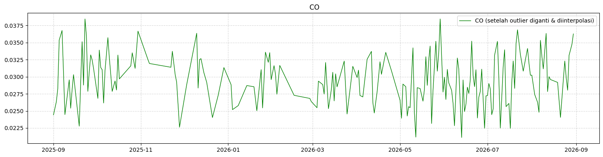
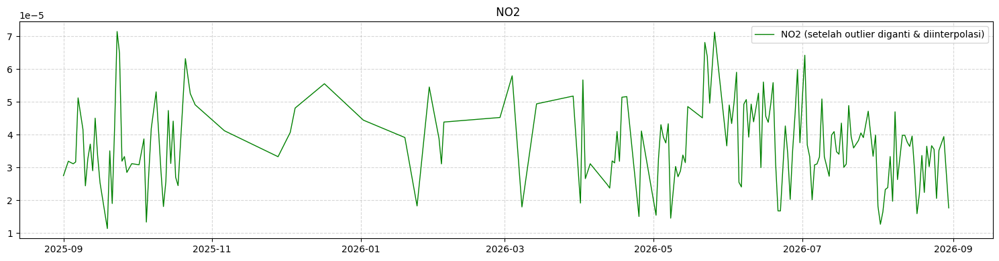
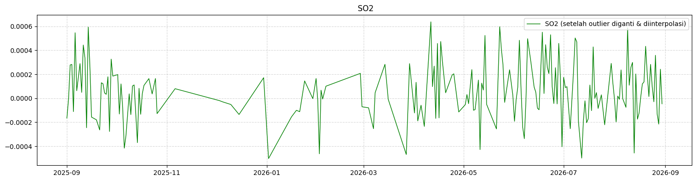

7. Ekstraksi Fitur TSFEL, Reduksi PCA, & K-Means Clustering#
Dokumen ini menjelaskan alur lengkap pengolahan data polutan udara (CO, \(NO_2\), dan \(SO_2\)) wilayah Surabaya Selatan (rentang waktu 31 Agustus 2025 s.d. 31 Agustus 2026), mulai dari eksplorasi deret waktu, ekstraksi 68 fitur TSFEL per polutan (total 204 kolom), reduksi dimensi menggunakan PCA, hingga analisis K-Means Clustering dan integrasi database Aiven Cloud.
1. Eksplorasi Data & Time Series Plot (Semua Polutan)#
Sebelum melakukan ekstraksi fitur, kita melakukan visualisasi deret waktu (time series plot) untuk melihat tren harian dan karakteristik fluktuasi dari ketiga polutan secara bersamaan.



2. Konsep Dasar, Deskripsi Fitur & Perhitungan Manual Khusus (wavelet_std & wavelet_var)#
Berdasarkan pembagian tugas kelas, fitur utama yang dianalisis secara mendalam oleh Muhammad izzul Millah Aqil adalah dua fitur berbasis dekomposisi wavelet: wavelet_std dan wavelet_var.
2.1 Deskripsi Fitur Khusus#
Dekomposisi Wavelet (Discrete Wavelet Transform / DWT) memecah sinyal deret waktu \(X(t)\) menjadi dua komponen utama:
Koefisien Aproksimasi (\(cA\)): Menggambarkan tren frekuensi rendah (pola jangka panjang) dari sinyal polutan.
Koefisien Detail (\(cD\)): Menggambarkan fluktuasi cepat, derau (noise), dan perubahan frekuensi tinggi dari sinyal polutan.
Fungsi ekstraksi fitur TSFEL mengekstrak statistik dispersi langsung dari Koefisien Detail (\(cD\)) sinyal:
wavelet_std(Standar Deviasi Wavelet): Mengukur tingkat sebaran atau simpangan baku dari fluktuasi frekuensi tinggi sinyal polutan. Nilai yang besar menunjukkan adanya perubahan konsentrasi harian yang sangat drastis atau tidak stabil.wavelet_var(Variansi Wavelet): Kuadrat dariwavelet_std, yang mengukur besarnya total variansi daya fluktuasi frekuensi tinggi sinyal polutan.
2.2 Formulasi Matematika#
Misalkan dari hasil dekomposisi wavelet diperoleh \(N\) buah koefisien detail \(cD = [cD_1, cD_2, \dots, cD_N]\) dengan rata-rata \(\mu_{cD}\):
Rumus Variansi Wavelet (
wavelet_var): $\(\text{wavelet\_var} = \frac{1}{N} \sum_{i=1}^{N} (cD_i - \mu_{cD})^2\)$Rumus Standar Deviasi Wavelet (
wavelet_std): $\(\text{wavelet\_std} = \sqrt{\text{wavelet\_var}} = \sqrt{\frac{1}{N} \sum_{i=1}^{N} (cD_i - \mu_{cD})^2}\)$
2.3 Perhitungan Manual (Studi Kasus: Polutan \(\text{NO}_2\))#
Untuk memahami cara kerja algoritma, dilakukan simulasi perhitungan manual menggunakan sampel mini sinyal konsentrasi \(\text{NO}_2\) (\(N = 4\) hari sampel) dalam satuan \(\text{ppm}\):
Langkah 1: Dekomposisi Wavelet Haar (Mencari Koefisien Detail \(cD\))#
Menggunakan filter Mother Wavelet Haar (\(\text{filter} = [\frac{1}{\sqrt{2}}, -\frac{1}{\sqrt{2}}]\) di mana \(\frac{1}{\sqrt{2}} \approx 0.70710678\)):
Sehingga didapatkan array Koefisien Detail: $\(cD = [-2.12132034 \times 10^{-5},\; -0.70710678 \times 10^{-5}]\)$
Langkah 2: Hitung Rata-rata Koefisien Detail (\(\mu_{cD}\))#
Langkah 3: Hitung Variansi Wavelet (wavelet_var)#
Langkah 4: Hitung Standar Deviasi Wavelet (wavelet_std)#
2.4 Pembuktian Kode Python (Manual vs PyWavelets vs TSFEL)#
Berikut skrip Python untuk membuktikan bahwa perhitungan manual di atas identik dengan output dari pustaka PyWavelets dan TSFEL:
import numpy as np
import pywt
import tsfel.feature_extraction.features as tsfel_features
# Sampel Sinyal NO2 Mini
x_no2_sample = np.array([20e-6, 50e-6, 30e-6, 40e-6])
# 1. Dekomposisi Wavelet Haar
cA, cD = pywt.dwt(x_no2_sample, 'haar')
# 2. Perhitungan Manual via NumPy
manual_var = np.var(cD)
manual_std = np.std(cD)
# 3. Perhitungan Menggunakan Pustaka TSFEL
tsfel_var = tsfel_features.wavelet_var(x_no2_sample)
tsfel_std = tsfel_features.wavelet_std(x_no2_sample)
print("=== PEMBUKTIAN FITUR WAVELET POLUTAN NO2 ===")
print(f"Hasil Manual (NumPy) -> wavelet_var: {manual_var:.8e} | wavelet_std: {manual_std:.8e}")
print(f"Hasil Pustaka TSFEL -> wavelet_var: {tsfel_var:.8e} | wavelet_std: {tsfel_std:.8e}")